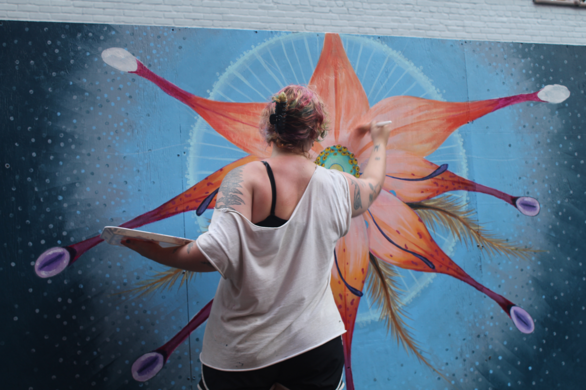

Photograph a variety of older buildings on campus (e.g., Hibbs, Pollack, Rhoads, etc.) Feel free to go to any other part of campus where you feel like hasn’t been maintained in a while.
Angle: How is VCU maintaining the quality of their older buildings as they still continue to construct new stuff? How do students and faculty feel about the quality of the facilities they use?
